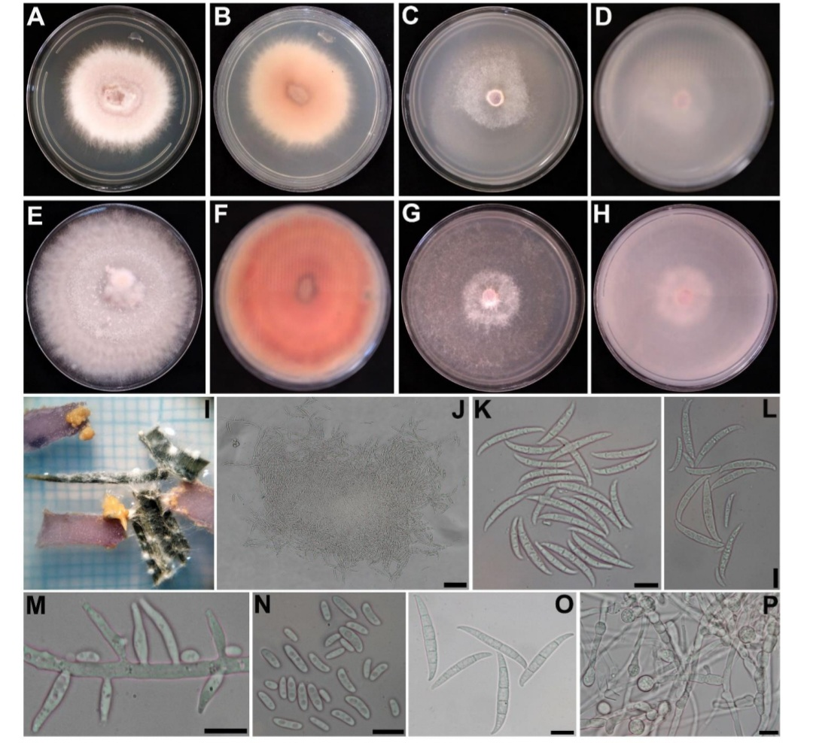

About Me
Hello! My name is Sahar Jebraeili, and I recently completed my master's degree, where I focused on the identification and control of Fusarium fungus. My research interest is in plant pathogens, particularly fungi, and I am eager to continue exploring this area. During my master's, I gained extensive hands-on experience in the laboratory, becoming well-versed in both the environment and equipment required for pathogen research. I am especially keen to deepen my knowledge and further investigate Fusarium or other fungus and their impact on plant health. I am also skilled in Python programming and look forward to applying it in my research for data analysis and model development.
Publications
-
Sahar jebraeili, Sedigheh Mousanejad, Akbar Khodaparast, Salar Jamali, Mohammadjavad Pourmoghaddam
Investigating the effectiveness of Hydroxyquinoline for the chemical control of cucumber root and stem rot caused by Fusarium fungus [In Preparation]